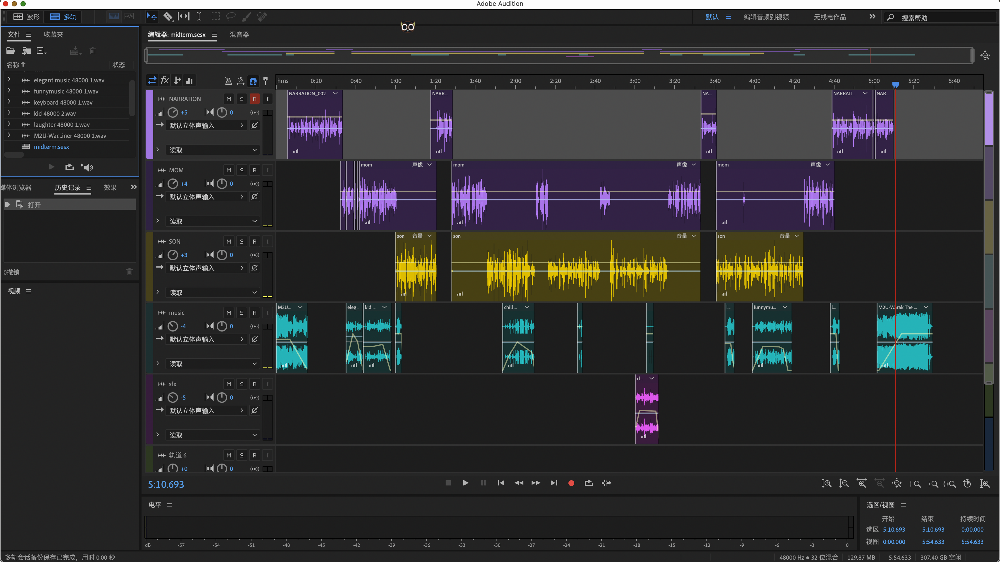

what is Interactive Media Arts?
虚拟社交媒体
机器聆听对于身份和口音探讨。
An audio-visual performance exploring anxiety and procrastination, utilizing Max/MSP for real-time mapping.
maxmsp和llm结合的实时播客背景音乐生成器。

描述A
描述B
描述C